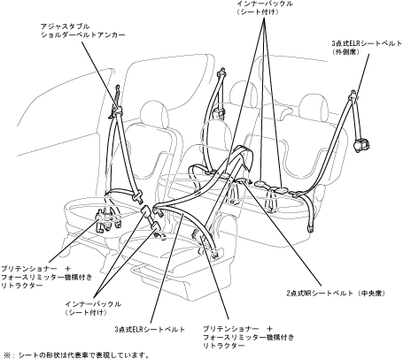

| Seat belt outline |
| ● |
A 3 -point ELR seat belt with a pliten shonor + force remitter has been set as standard on the front seat of all cars.The Priten Shonor Mechanism is a mechanism that detects and operates the impact when a vehicle collides, and enhances the crew restraint effect by winding the seat belt instantly.The Force Limiter Mechanism is a mechanism that maintains the specified values and reduces the power applied to the crew's chest when the loads applied to the seat belt are more than the prescribed values after the Priten Shonor Mechanism operates.
|
| ● |
All vehicles and three -point ELR seat belts have been set as standard on the rear seats.
|
| ● |
A two -point NR seat belt is used for the rear central seat.
|
|  |